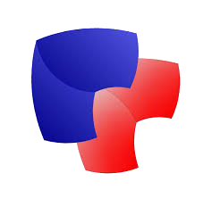

Esercizi usando esclusivamente HTML e CSS
Esercizi usando esclusivamente HTML, CSS e JAVASCRIPT
Mini-sito su cavi in rame, cavi in fibra ottica e standard wireless più diffusi per la creazione di reti informatiche